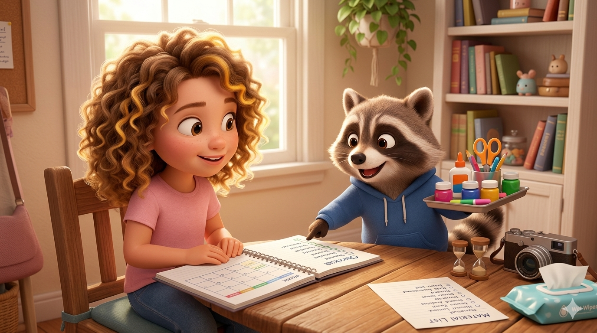
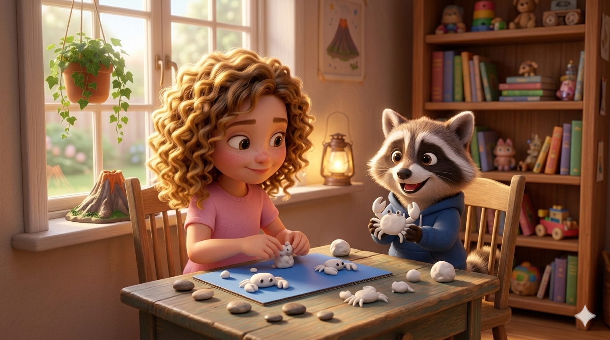
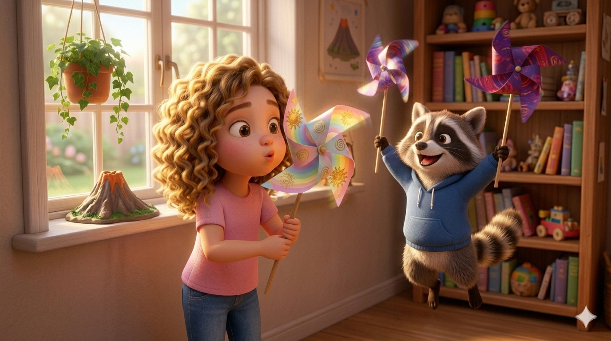
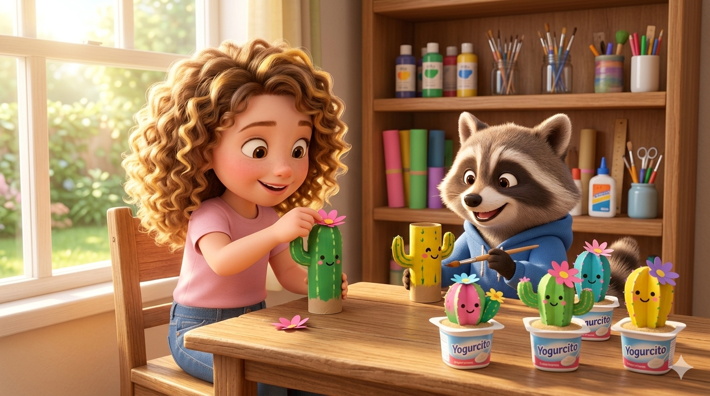
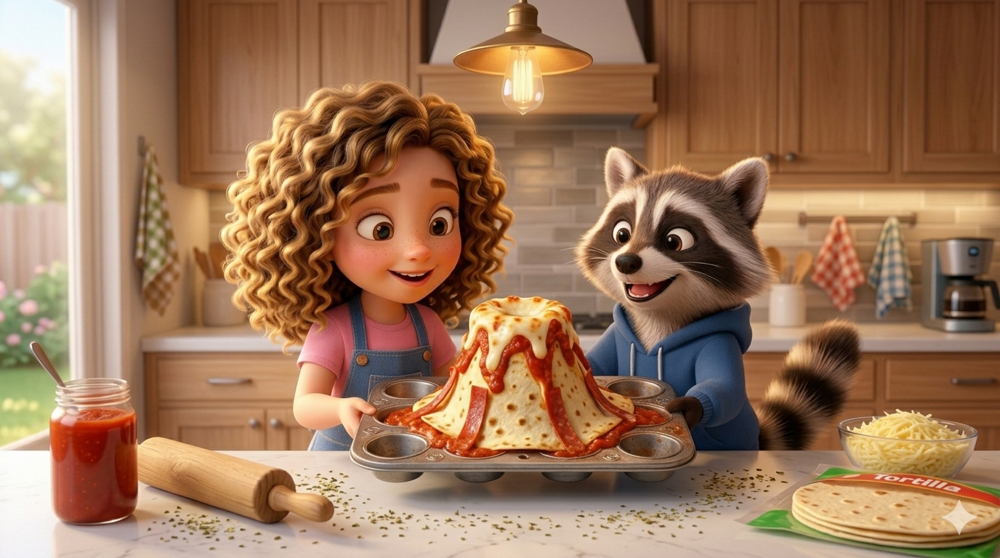

📋 Instrucciones para Padres
'">
🎯 OBJETIVOS EDUCATIVOS:
✅ Conocimiento cultural: Aprender sobre César Manrique y su amor por Canarias
✅ Desarrollo motor: Trabajar la motricidad fina con manualidades
✅ Creatividad: Fomentar la expresión artística
✅ Conciencia ecológica: Valorar y proteger la naturaleza
✅ Paciencia: Seguir procesos paso a paso hasta completar cada actividad
⏰ TIEMPO ESTIMADO POR ACTIVIDAD:
🦀 Cangrejitos Jameitos: 20-30 min | Dificultad: Baja
🌬️ Molinillo Bailarín: 25-35 min | Dificultad: Media (Requiere adulto)
🌵 Jardín de Cactus: 30-40 min | Dificultad: Baja
🌋 Volcanes 3D: 40-50 min | Dificultad: Media (Requiere adulto)
🛡️ MEDIDAS DE SEGURIDAD:
⚠️ Tijeras: Usa tijeras infantiles de punta redonda
⚠️ Chincheta: Siempre con supervisión y ayuda de adulto
⚠️ Horno: El adulto maneja el horno, Martina solo prepara
⚠️ Pintura: Usa delantal o ropa vieja
⚠️ Piedrecitas: Lávalas bien antes de usar
⚠️ Alergias: Verifica que Martina no sea alérgica (queso, gluten)
📦 PREPARACIÓN PREVIA:
✅ Todos los materiales en una bandeja o caja
✅ Espacio de trabajo limpio y amplio
✅ Toallitas húmedas o trapos a mano
✅ Delantal o camiseta "de manualidades"
✅ Música de fondo suave (opcional: música canaria)
✅ Cámara de fotos/móvil para documentar el proceso
💡 CONSEJOS:
Actividad 1 - Cangrejitos: Si la plastilina está dura, caliéntala en las manos
Actividad 2 - Molinillo: Practica con cuadrado grande (20x20 cm) primero
Actividad 3 - Cactus: Deja secar la pintura 24 horas
Actividad 4 - Volcanes: Precalienta el horno antes de empezar

🦀 Actividad 1: Los Cangrejitos Jameitos
'">
🦝 El paso a paso de Mapachito:
El cuerpecito: Haz una bolita redonda con la plastilina blanca. ¡Ese es el caparazón!
A caminar: Haz churritos muy finos para ponerle 6 patitas cortas y 2 más larguitas con pinzas.
El toque final: Dibújale la boca con un palillo (¡ojitos no, que son ciegos!).
Su casita: Coloca las piedras sobre la cartulina azul y pon tu cangrejito encima.

🌬️ Actividad 2: El Molinillo Bailarín
'">
🦝 El paso a paso de Mapachito:
La base: Recorta un cuadrado de 15x15 cm.
¡A diseñar!: Decora por los dos lados con colores brillantes, soles, espirales o volcanes.
Los cortes mágicos: Corta desde las 4 esquinas hacia el centro (sin llegar del todo).
El truco: Dobla las puntas de forma alterna (una sí, una no).
El montaje: Un adulto clava la chincheta en el centro y en la pajita.
¡A jugar!: ¡Sopla fuerte o corre para ver cómo gira!

🌵 Actividad 3: Jardín de Cactus
'">
🦝 El paso a paso de Mapachito:
Pintura verde: Pinta todo el rollo de verde. ¡Cuidado con no pintar a Mapachito!
Pinchitos: Cuando seque, dibuja pequeñas "V" para hacer las púas y una gran sonrisa.
A plantar: Rellena el envase de yogur con tierra y clava el rollo.
La flor: Haz una bolita con papel de seda y pégala arriba del todo.

🌋 Actividad 4: Mini Volcanes 3D
'">
🛠️ Materiales (Ingredientes):
• Tortillas de trigo (fajitas)
• Salsa de tomate frito (el magma)
• Queso mozzarella rallado (la lava)
• Tiras de pimiento rojo o pepperoni
• Orégano (la ceniza volcánica)
• Molde para magdalenas
🦝 El paso a paso de Mapachito:
Cortar: Corta una tortilla por la mitad.
El cono: Enróllala formando un cucurucho apretando bien la punta.
Rellenar: Pon tomate y queso dentro, con tiras de pimiento en los bordes.
Cerrar: Dobla los bordes hacia dentro tapando el queso.
Al molde: Coloca boca abajo en el molde de magdalenas.
El cráter: Haz un corte en la punta y pon orégano.
Hornear: 180°C durante 10-12 minutos (¡con ayuda de adulto!).
Martina va a disfrutar muchísimo haciendo estas actividades con tu ayuda y la de Mapachito.
💡 Consejo: No hagas todas las actividades el mismo día. Espacialas durante una semana para mantener la ilusión.
📸 CÓMO DOCUMENTAR PARA EL COLE:
Fotos del proceso:
• Martina con los materiales
• Primer plano de las manos trabajando
• Resultado final de cada actividad
• Martina sonriendo con su creación
Presentación:
• Imprime las fotos (10x15 cm)
• Pega en folios o cartulina
• Añade títulos: "Actividad 1: Los Jameitos"
• Incluye una portada con el nombre de Martina
🏆 DIPLOMA FINAL:
🏆
DIPLOMA DE EXPERTA EN CÉSAR MANRIQUE
MARTINA
Por completar con éxito todas las actividades
🦝 Mapachito
¡Disfrutad mucho de esta aventura creativa juntos!
🦝🌵